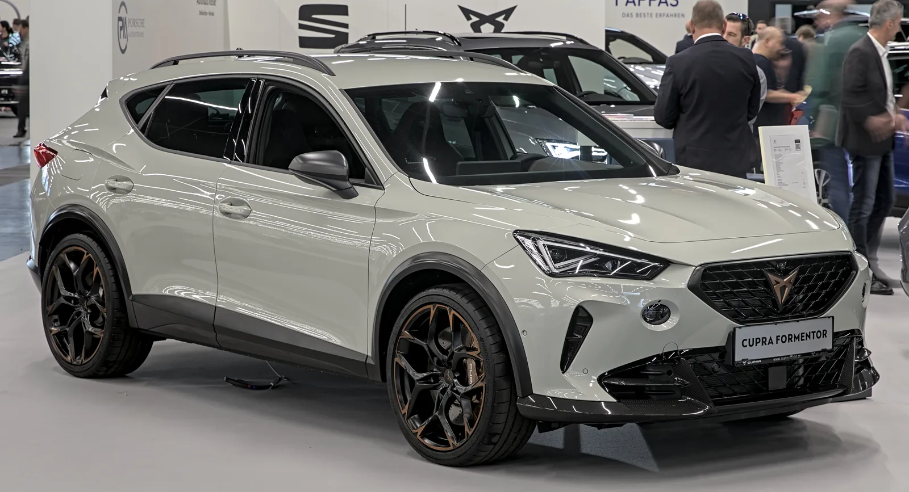
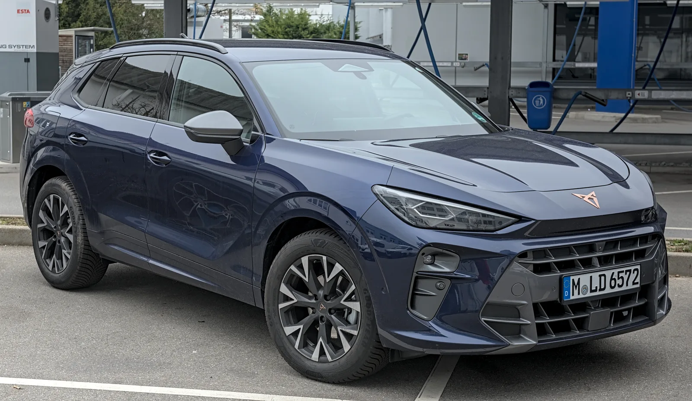
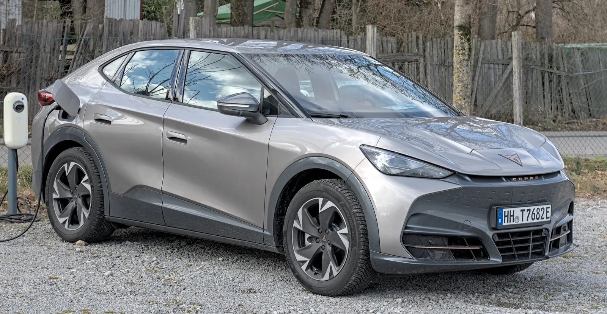
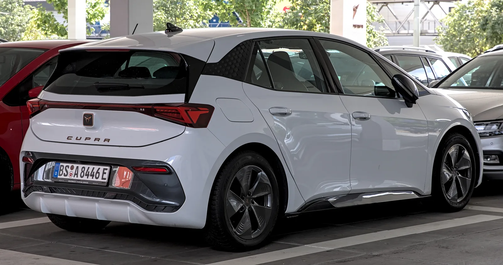

▲ 쿠프라의 간판 모델 포르멘토르. 2025년 전 세계 10만 4,400대가 팔린 브랜드 최다 판매 모델이다 ⓒ Wikimedia Commons
구릿빛 로고에 스페인 국기를 닮은 색을 두른 이 브랜드, 국내에서 본 적 있는가.
모터쇼 취재나 해외 직구 커뮤니티가 아니면 마주치기 힘들지만, 쿠프라(CUPRA)는 지난해 전 세계에서 32만 대 넘게 팔리며 창립 이래 최고 실적을 냈다. 폭스바겐그룹 산하 브랜드 중 가장 가파르게 크는 축에 속한다.
그런데도 한국에는 아직 정식 수입사가 없다. 2022년부터 진출설이 돌았지만 4년째 확정 소식은 없다. 취합 가능한 실제 보도를 토대로 쿠프라의 정체, 국내 진출을 둘러싼 그간의 흐름, 지금 팔리는 모델들을 정리했다.
1. 쿠프라란 어떤 브랜드인가
쿠프라는 원래 브랜드가 아니라 트림명이었다. 스페인 자동차 회사 세아트(SEAT)가 레온·이비자 등에 얹던 고성능 사양의 이름이 '쿠프라'였다. 이 트림이 2018년 2월 별도의 독립 브랜드로 분리되면서 지금의 쿠프라가 출발했다.
세아트와 마찬가지로 폭스바겐그룹(Volkswagen Group) 산하이며, 그룹의 플랫폼과 파워트레인을 공유하면서도 스포티한 디자인과 포지셔닝으로 별도 팬층을 만들어왔다. 구릿빛(코퍼) 액센트가 들어간 로고와 삼각형 엠블럼이 브랜드 정체성이다.
📍 세아트와의 관계
세아트는 여전히 존재하는 브랜드지만, 최근에는 쿠프라 중심으로 그룹 내 역할이 재편되는 흐름이 보도되고 있다. 2025년 실적 발표에서도 세아트(25만 7,400대, -17.0%)는 줄고 쿠프라(32만 8,800대, +32.5%)는 늘어난 대조적인 흐름이 나타났다.
2. 한국 진출설, 어디까지 왔나
쿠프라의 한국 진출 이야기는 새 브랜드치고 꽤 오래됐다. 확인 가능한 보도를 시간순으로 정리하면 다음과 같다.
| 시점 | 내용 |
|---|---|
| 2022년 | 폭스바겐그룹코리아, 세아트·쿠프라·스코다 등 신규 브랜드 진출 가능성을 시사 |
| 2024년 3월 | 쿠프라 북미 진출 소식과 함께 "한국 등 글로벌 시장으로 확장 가능성도 있다"는 전망 보도(카가이) |
| 2026년 2월 | "한국 도로가 아직 허락하지 않은 글로벌 명차" 특집에서 쿠프라를 미출시 브랜드 중 가장 독특한 위치로 소개, 포르멘토르에 대한 국내 애호가 지지 언급(글로벌모터스) |
즉 수입사 계약이나 전시장 오픈처럼 확정된 사실은 아직 없다. 다만 폭스바겐그룹코리아가 이미 폭스바겐·아우디·벤틀리·람보르기니를 운영 중인 만큼, 그룹 내 신규 브랜드로 쿠프라가 추가될지가 계속 관심사로 거론되는 상황이다.
▲ 쿠프라의 간판 모델 포르멘토르. 국내에서는 정식 판매 없이도 애호가들 사이에서 인지도가 꾸준히 언급된다 ⓒ Wikimedia Commons
3. 2025년, 창립 이래 최대 실적을 냈다
쿠프라는 지난해 역대 최고 판매 기록을 세웠다. 폭스바겐그룹 발표에 따르면 세아트·쿠프라 합산 판매는 58만 6,300대로 전년(55만 8,200대) 대비 5.1% 늘었고, 이 중 쿠프라 단독 판매는 32만 8,800대로 전년(24만 8,100대) 대비 32.5% 증가했다. 같은 해 쿠프라는 누적 판매 100만 대도 넘어섰다.
| 모델 | 2025년 판매량 | 비고 |
|---|---|---|
| 포르멘토르(Formentor) | 10만 4,400대 | 쿠프라 최다 판매 모델 |
| 테라마르(Terramar) | 6만 6,000대 | 출시 첫 완전 연도 실적 |
| 본(Born) | 4만 3,700대 | 순수 전기(BEV) 해치백 |
| 타바스칸(Tavascan) | 3만 6,000대 | 순수 전기(BEV) 쿠페형 SUV |
전동화 비중도 함께 늘었다. 세아트·쿠프라 그룹 전체로 플러그인하이브리드 판매가 8만 4,400대(+69.2%), 순수전기차 판매가 7만 9,700대(+65.9%)로 각각 크게 증가했다.

▲ 2024년 출시돼 첫 완전 연도인 2025년 6만 6,000대가 팔린 테라마르 ⓒ Wikimedia Commons
4. 지금 팔리는(그리고 곧 나올) 쿠프라 라인업
쿠프라는 가솔린·PHEV·순수전기를 아우르는 라인업으로 확장 중이다. 국내 관련성이 높은 모델 위주로 정리했다.
| 모델 | 차급 | 파워트레인 | 비고 |
|---|---|---|---|
| 포르멘토르 | 콤팩트 SUV 쿠페 | 가솔린 · PHEV · 고성능 VZ | 쿠프라 최다 판매, 브랜드 대표 모델 |
| 테라마르 | 중형 SUV | 가솔린 · e-하이브리드 · PHEV | 2024년 출시, 세아트 아테카 후속 포지션 |
| 본 | 전기 해치백 | 순수전기(BEV) | 폭스바겐 MEB 플랫폼 기반 |
| 타바스칸 | 쿠페형 전기 SUV | 순수전기(BEV) | 폭스바겐 안후이(중국) 생산 |
| 라발(Raval) | 소형 전기 해치백 | 순수전기(BEV) | 2026년 출시 예정, 마르토렐 공장 생산 예정 |
2026년에는 라발 출시와 함께 본의 신규 버전, 타바스칸의 대규모 상품성 개선이 예정돼 있다고 폭스바겐그룹은 밝혔다. 라발은 폭스바겐그룹의 '전기 도심형 차(Electric Urban Car)' 패밀리에 속하며, 스페인 마르토렐 공장이 이 차급 생산 거점이 된다.
✅ 국내 소비자가 헷갈리기 쉬운 점
· 쿠프라는 병행수입 매물이 존재하지 않는 것은 아니지만, 국내 정식 딜러망·애프터서비스 체계는 없다
· '쿠프라 레온' 등 세아트 시절 트림명이 남아있는 중고 표기와, 독립 브랜드로 분리된 이후의 쿠프라는 구분해서 봐야 한다
· 국내 일부 타이어 업체와의 협력 등 간접적인 접점은 조금씩 늘고 있으나, 이는 공식 승용차 수입과는 별개다
5. 다른 나라에서는 어떻게 들어갔나
쿠프라의 해외 진출 방식을 보면 한국 진출 시나리오도 가늠해볼 수 있다. 대표적으로 호주는 2022년 레온·아테카·포르멘토르로 먼저 진출했고, 이듬해 초 전기차 본이 추가되는 단계적 방식을 밟았다.
📍 "쿠프라를 글로벌 브랜드로 만드는 큰 걸음"
당시 쿠프라 CEO 웨인 그리피스는 호주 진출을 두고 "호주는 쿠프라를 글로벌 브랜드로 만들 수 있을지 시험하는 큰 걸음"이라며 "세아트로는 가져보지 못했던, 브랜드를 세계화할 실질적 기회"라고 밝힌 바 있다. 유럽 밖 신규 시장에 진입할 때 인기 모델 몇 종으로 먼저 발판을 마련하고, 전기차 라인업을 뒤이어 투입하는 패턴이 반복되고 있다.
북미 시장 역시 2024년 포르멘토르 전동화 버전을 중심으로 진출이 예고됐고, 현지 생산(멕시코)까지 검토되는 것으로 보도됐다. 이런 흐름을 근거로 국내 매체들은 "북미 진출과 함께 한국을 포함한 글로벌 시장으로 확장할 가능성"을 계속 짚어왔다.

▲ 순수전기 쿠페형 SUV 타바스칸. 2025년 3만 6,000대가 판매됐다 ⓒ Wikimedia Commons
6. 관전 포인트 — 들어온다면 무엇을 눈여겨봐야 하나
확정된 일정은 없지만, 몇 가지는 미리 점검해볼 만하다.
✅ 국내 진출 시 지켜볼 변수
· 운영 주체 — 이미 4개 브랜드를 운영 중인 폭스바겐그룹코리아가 직접 맡을지, 별도 딜러사를 통할지
· 도입 모델 — 판매 1위인 포르멘토르가 선발주자가 될 가능성이 높게 거론되지만, 전동화 흐름을 고려하면 본·타바스칸 같은 전기차가 먼저 들어올 여지도 있음
· 가격 포지셔닝 — 폭스바겐과 아우디 사이, 혹은 그 이상의 스포티 포지션을 어떻게 잡을지
· 서비스망 — 기존 폭스바겐·아우디 서비스센터를 공유할지 여부
쿠프라의 글로벌 소식은 공식 미디어센터에서 확인할 수 있다. 폭스바겐그룹 발표 원문 바로가기

▲ MEB 플랫폼 기반 전기 해치백 본. 2025년 4만 3,700대가 판매됐다 ⓒ Wikimedia Commons
7. 요약
쿠프라는 세아트의 고성능 트림에서 2018년 독립한 폭스바겐그룹 산하 브랜드로, 2025년 전 세계 32만 8,800대(+32.5%)를 판매하며 누적 100만 대를 돌파했다. 포르멘토르·테라마르가 판매를 이끌고, 본·타바스칸 등 전기차 라인업도 빠르게 크고 있다.
한국 진출은 2022년부터 거론돼왔지만 아직 공식화되지 않았다. 폭스바겐그룹코리아가 신규 브랜드 가능성을 시사한 바 있고, 북미 진출과 맞물려 한국 확장 가능성이 국내 매체를 통해 계속 전망되는 정도다.
호주·북미 사례처럼 인기 모델 먼저, 전기차 나중이라는 패턴이 반복돼온 만큼, 실제 진출이 이뤄진다면 포르멘토르를 축으로 한 단계적 도입이 유력한 시나리오로 거론된다.